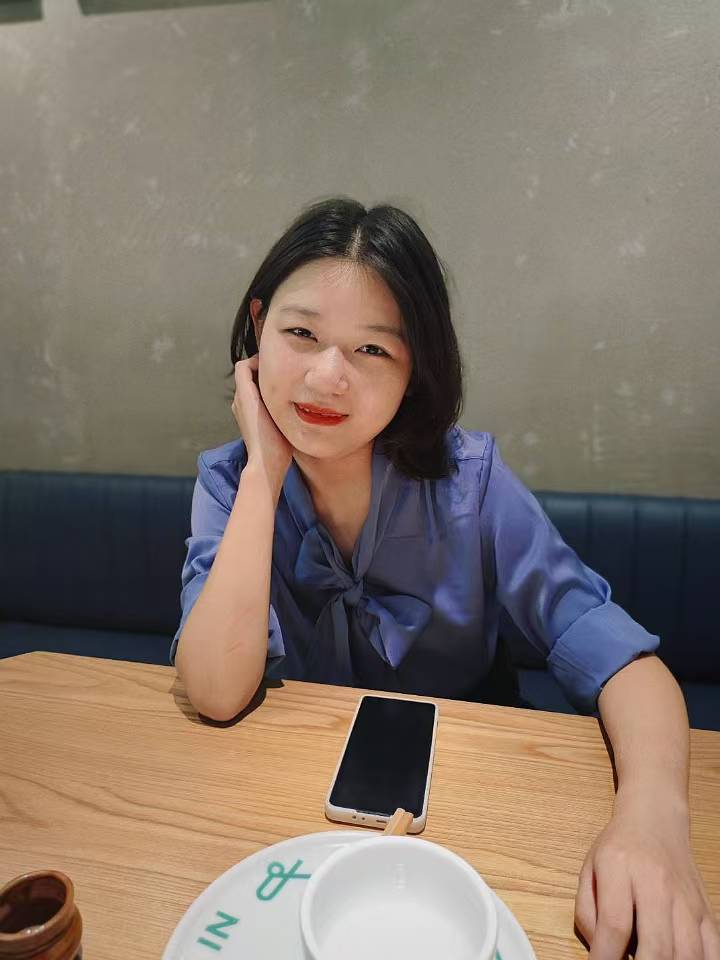
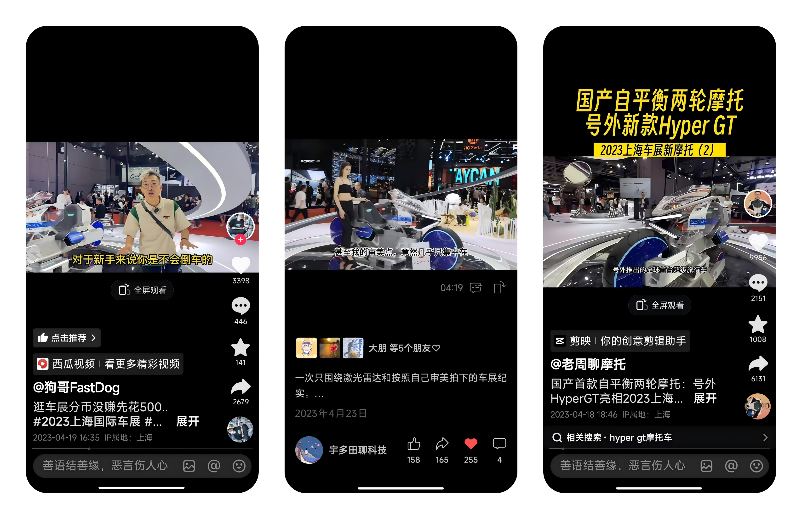

Yangyang Yu(Ella)
Pubilc Relationship Manager
Horwin
yuyangyangbjfu@163.com
Github / Google scholar / CV
/ Google scholar / CV
Pubilc Relationship Manager
Horwin
yuyangyangbjfu@163.com
Github
/ Google scholar / CV
/ Google scholar / CV
After graduating in June 2019, I embarked on a journalism career. Beyond merely chasing news, my focus extended to delivering insightful perspectives, particularly in the tech industry. Later, as Brand PR Manager at a company in the new energy electric motorcycle sector, I applied my corporate understanding gained in journalism to shape the brand’s image. This four-year journey revealed the crucial link between enterprises and the media, clarifying my future career direction.
Public Relations Manager, Horwin Co., Ltd. (since Feb 2023)
Senior Reporter, 36kr. (since Dec 2020)
Reporter, Caijing Magazine-Latepost. (since Jan 2020)
Intern Reporter and Business Analyst work experiences at 36kr, China Daily and China Venture. (before 2020)
Fu Sheng: Reflection at the Cliff's Edge (傅盛：悬崖边的反思)
Yangyang Yu, Wei Song, Xiaoyu Zhang. 2020 Latepost. 2. BIGO: The Champion of Survival in Globalization's Interstices（BIGO：全球化夹缝中的生存冠军) Shiyun Li, Yangyang Yu, Wei Song, Xiaoyu Zhang. 2020 Latepost. 3.Part One: Beyond Wuhan: A Comprehensive Record of 17 Cities in Hubei's Epidemic Zone (不止有武汉：湖北疫区17城全记录上篇） YiLiu Fanggong, Wei Song, Shiyun Li, Yiwen Guan, Jing Chen, Yangyang Yu, Kexin Ma, Fan Zhang. 2020 Latepost. 4. Part Two: Beyond Wuhan: A Comprehensive Record of 17 Cities in Hubei's Epidemic Zone (不止有武汉：湖北疫区17城全记录下篇）. YiLiu Fanggong, Shiyun Li, Yiwen Guan, Wei Song, Honghao Gao, Yangyang Yu, Jing Chen, Fan Zhang, Kexin Ma. 2020 Latepost. 5. Siege in India: Some Hasten Their Escape, Others Earn Frenziedly (印度围城：有人在加速逃离，有人在疯狂赚钱). Shiyun Li, Yangyang Yu, Junjie Huang. 2020 Latepost. 6. Scientists Start to Master Earning Money (科学家们开始学会赚钱). Yimi Yao, Yangyang Yu, Wei Song. 2020 Latepost. 7. Adventure "Virus cruise" : 621 people infected on the Diamond Princess (历险“病毒邮轮”：钻石公主号621人感染始末). Honghao Gao, Yiwen Guan, Wei Song. 2020 Latepost. 8. Six Months into Entrepreneurship and First Financing: What Happened to Jia Jiaya After Leaving Tencent? (创业半年、拿到第一笔融资，贾佳亚离开腾讯之后经历了什么？). Yangyang Yu, Junjie Huang. 2020 Latepost. 9. LatePost Exclusive | SenseTime Valued at $10 Billion, Undergoing Fundraising and Seeking New Growth Avenues (晚点独家｜商汤科技估值 100 亿美元融资进行中，寻找新的增长点). Yangyang Yu, Junjie Huang. 2020 Latepost. 10. Latepost exclusive | MegVII suspends its Hong Kong stock listing plan, swinging between returning to A and going to Hong Kong(晚点独家｜旷视中止港股上市计划，在回A与赴港之间摇摆). Yangyang Yu, Junjie Huang. 2020 Latepost. 11. LatePost Exclusive | Turing Award Winner Professor Yao Qizhi Launches VC Fund: "Scientists Can Be Entrepreneurs Too" (晚点独家｜图灵奖得主姚期智教授创立 VC 基金，“科学家也可以做企业家”). Yangyang Yu, Junjie Huang. 2020 Latepost. 12. LatePost Exclusive | Jia Jiaya, Former Head of Tencent Youtu Lab, Establishes AI Company with Pre-A Round Funding Secured (晚点独家｜原腾讯优图实验室负责人贾佳亚创立 AI 公司，目前已获 Pre-A 轮融资). Yangyang Yu, Honghao Gao, Wei Song. 2020 Latepost. 13. Behind CloudWalk's 1.8 billion financing from state-funded funds: AI unicorns compete to grab new markets (云从科技获国资基金18亿融资背后：AI独角兽争相抢夺新市场). Yangyang Yu, Wei Song. 2020 Latepost. 14. Internet People, Trapped in the Days Waiting for IPO | Shenke (互联网人，困在等待上市的日子里丨深氪). Yangyang Yu, Xuan Yang. 2021 36kr. 15. Earn 5 Million in 2 Months: Catching the Last Dividend on Wechat Video Accounts | Rearview Mirror (2 个月挣 500 万， 在视频号抓住最后的红利｜反光镜). Yangyang Yu, Qian Qiao. 2021 36kr. 16. 36Kr Exclusive | ByteDance 2021 Advertising Revenue: Double-Digit Growth in the First Half of the Year, Stagnation in Q3 (36 氪独家 | 字节跳动 2021 广告收入：上半年双位数增长，第三季度陷入停滞) (36Kr Editor-in-Chief Award). Yangyang Yu, Xuan Yang, Xinyu Zhang. 2021 36kr. 17. 36Kr Exclusive | Tencent's Further Layoffs: Impacting WeChat Video Accounts, Gaming, Strategic Investments, and Cutting into Management (36 氪独家 | 腾讯再裁员：波及微信视频号、游戏、战略投资，对管理层动刀) (36KrEditor-in-Chief Award). Yangyang Yu, Xuan Yang. 2022 36kr. 18. Douyin E-commerce, the Hope of the Entire Village | Shenke (抖音电商，全村的希望｜深氪)（36Kr WeChat Public Account views: 60k+) Yangyang Yu, Qian Peng, Lan Yao, Qian Qiao, Xuan Yang. 2022 36kr. 19.200,000 College Students Flock to BYD, But There's No Room for the Dream of Wealth | Rearview Mirror (20 万大学生涌向比亚迪，但这里装不下造富梦｜反光镜)（36Kr WeChat Public Account views: 100k+) Qian Zhou, Youhui Zhou, Cancheng Zheng, Yangyangyu. 2022 36kr.
2023 Shanghai International Automobile Industry Exhibition, Led Horwin’s PR and social media communication. Crafted speeches for the press conference and prepared press releases. Successfully invited over 100 media outlets, resulting in a total of over 102 articles. Devised and executed a strategy that produced 5 articles on the company’s WeChat official account during the exhibition.
Brand promotionArticles
Extra! Auto Shanghai, Here We Come!(号外：上海车展，我们来了)
Auto Shanghai | All You Need to Know About Senmenti 0 in One Article (上海车展｜一文读懂Senmenti 0)
Videos
 Media Report
Media Report
Articles
Videos

2023 Chongqing International Motorcycle Trade Exhibition, Orchestrated the PR and social media communication strategy. Drafted news releases, social media copies, and various promotional materials. Invited over 20 media professionals for product experience trials and test drives, generating over 30 in-depth reports on platforms like TikTok and other video-sharing sites. Garnered attention from top-tier media including Xinhua News Agency, Chongqing Television Station, and 36Kr, resulting in over 100 articles across various platforms. Collaborated with the sales department, achieving a conversion of hundreds users seeking car consultations.
Brand promotion
Articles
Taste the Flavor of the 10% Super E-Motorcycle | New Evolution, Stunning the Mountain City (品尝10%超级电摩的味道｜全新进化，震撼山城)
Videos

Articles
Videos

Walking with Scientists, Collaborated with Chinese Academy of Sciences academician Liu Jiaqi and Bilibili influencer Wang Shengxian to promote Horwin’s documentary series Walking with Scientists across platforms like Red, Bilibili, TikTok, and WeChat. Partnered with product and design teams to create high-quality promotional materials, achieving 100,000+ views on Bilibili and 200,000+ total views across platforms, driving strong audience engagement.